Initial Approach
I first used my orientation code except I swapped out the calculations from yaw to pitch with the DMP readings. I did not modify anything on my robot.
The problem with this is that my IMU was laid flat parallel to the floor when the robot is flat on four wheels. In an inverted pendulum setup, the robot needs to be up on two wheels, perpendicular to the floor. This means the IMU also ends up perpendicular with the floor. When the IMU is 90 degrees with the floor, tilting it forwards or backwards just brings the readings closer to zero as seen in the data below. This wouldn't work with my PID controller since the controller would think that tilting forward and backwards are the same thing and would only spin the motors in one direction.
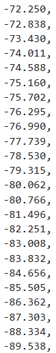
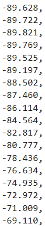
This meant I needed to modify the orientation of my IMU on my robot and I chose the wall of the battery tray in the photo below. The yellow square is where the IMU was originally mounted.
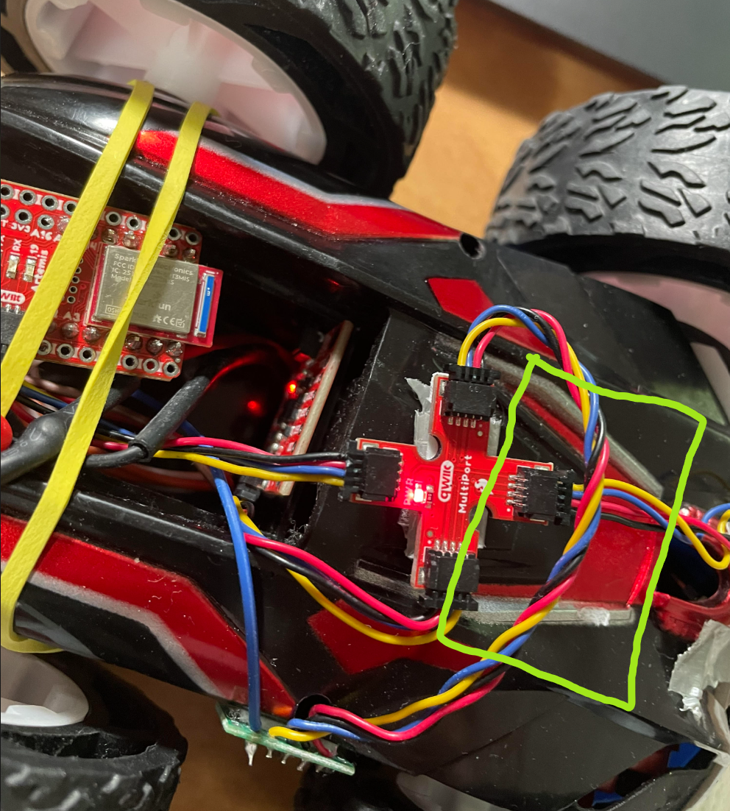
Now the IMU read 0 degrees when the robot was perpendicular to the floor on two wheels and tilting forward gave positive pitch readings, and backwards read negative pitch readings. The forward side on my robot is the side seen in the photo above.
I then tested my robot.
Now to get the robot to stay upright, the robot needs to keep its wheels directly under the center of gravity of the robot. This means if the robot is tilting forward, the wheels need to drive forward and vice versa. In the video, the wheels are spinning in the opposite direction they should be so I fixed it.
From the video, I also noticed that the top wheels were basically doing nothing except for acting like a flywheel that stored increased spin up and slow down time for the motor. The extra gearing for the top wheels also adds friction. I fixed this by removing the first gear the motor touches on the top wheel set as shown in the photo below.
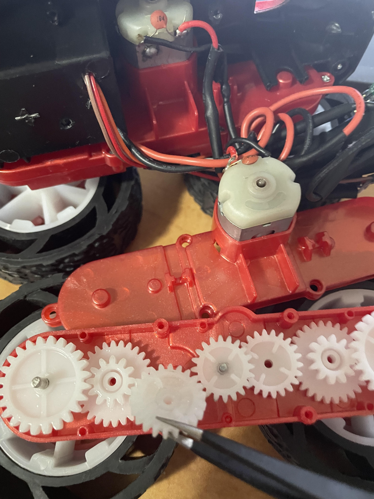
Now I began testing the robot actually trying to balance. I initially used Kp = 3.0, Ki = 0.0, and Kd = 0.9.
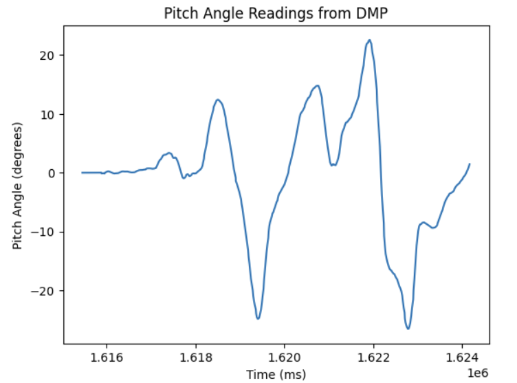
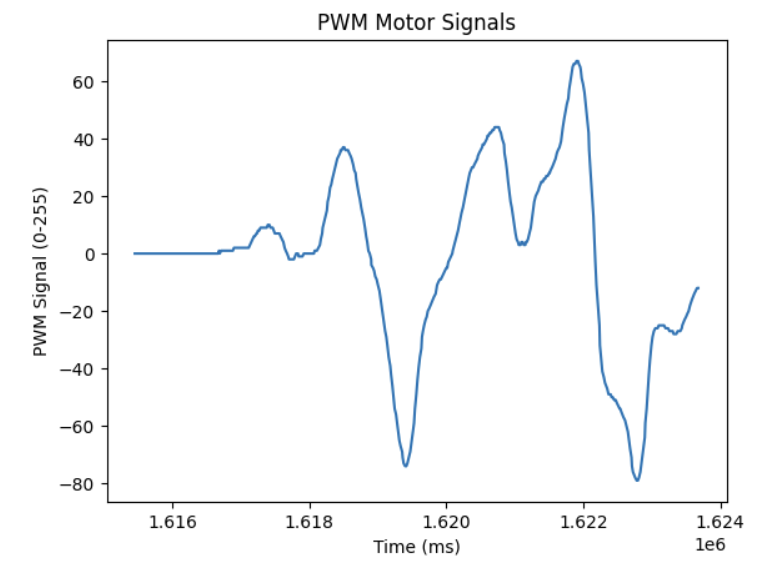
As you can see from when I am holding the robot in the air and from the data, the motors respond well to changes in angle, however when the robot is placed on the ground, the motors don't have any power to keep the robot upright. It takes a while for the motor commands to go high enough to have any affect on the robot, and by that time the robot would've already fallen. As I tested before with the motor PWM inputs, there is a minimum PWM input before the robot even starts moving, and so I needed to determine a good minimum command for when the robot was on two wheels.
I used the minimum command clamp I made for the motor lab as shown below. This would raise any motor command input less than the minimum command to the minimum command.
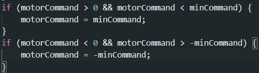
I used a couple different minimum commands from 30-40 and the robot twitched back and forth because of it. However, the robot still responded very slowly to changes as seen in the video below.
I then upped the Kp value to 6.0 to try to get the robot to respond faster.
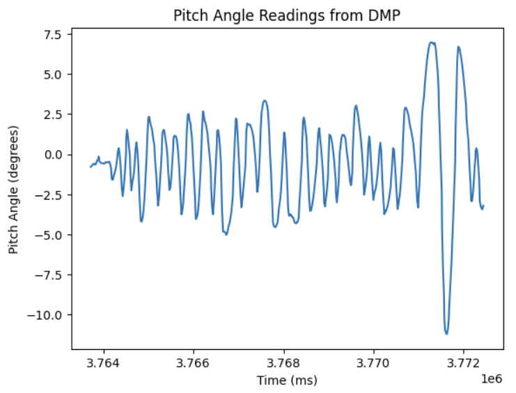
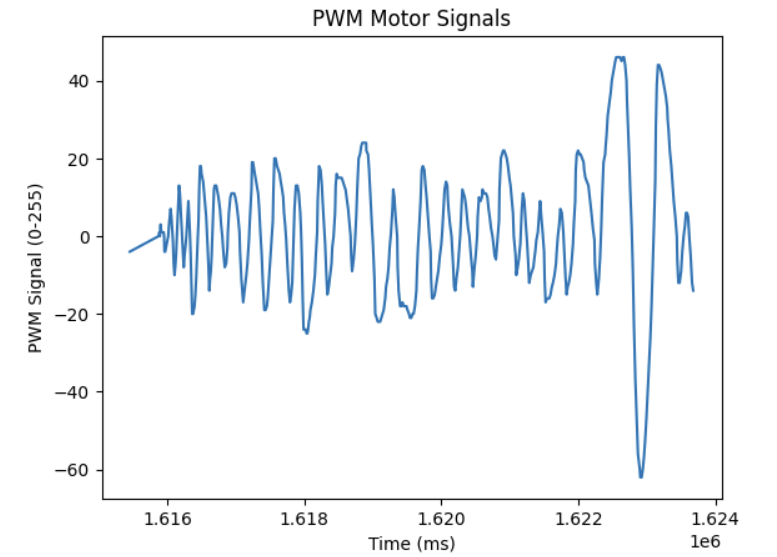
Note that the PWM values in the plot don't show the clamped values, just the raw PID control input. As you can see from the video and the motor input data, the robot responded a lot quicker, but as you can see at 8 seconds in the video and from the data, the robot would overshoot quite a lot. So I tried upping the Kd value all the way up to 6.0.
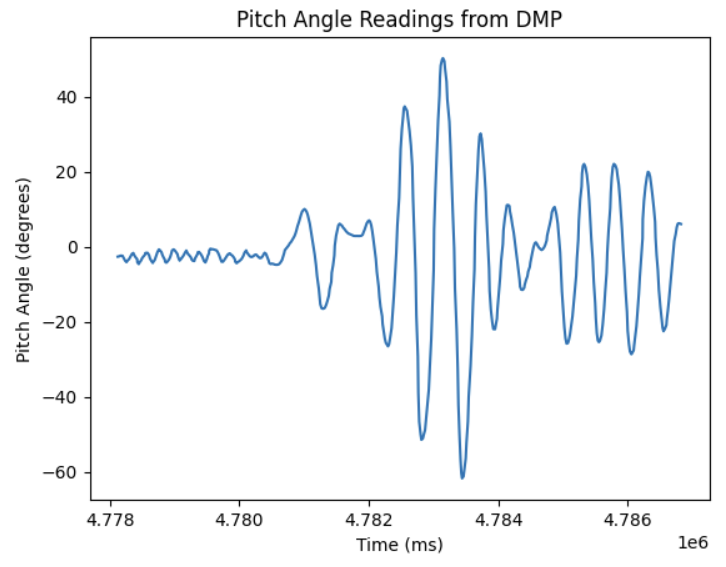
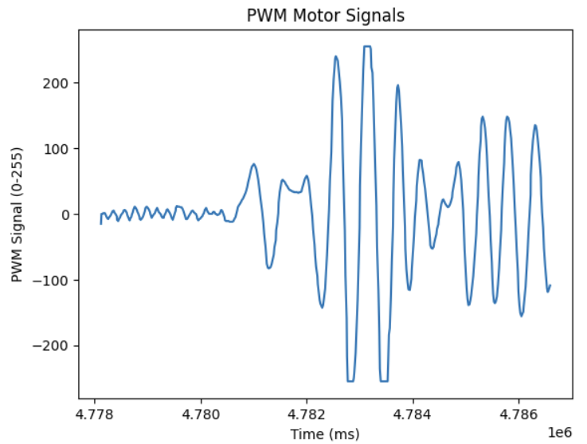
The PWM signal peaks were spaced out more and the wind up time seemed smoother, but there was still overshooting as you can see in the video. I tried smoothing it out and reducing overshoot by increasing Kd again to 9.0, and I got the results below:
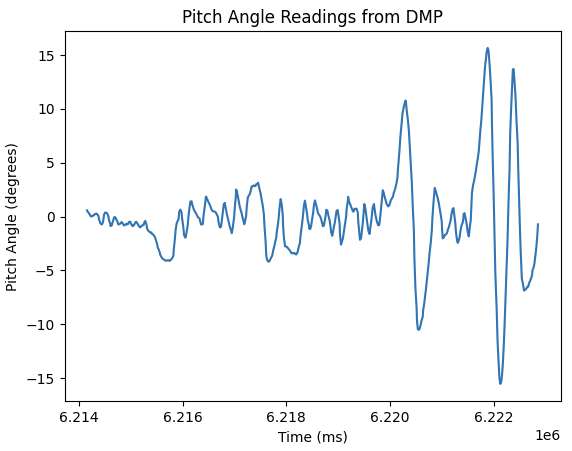
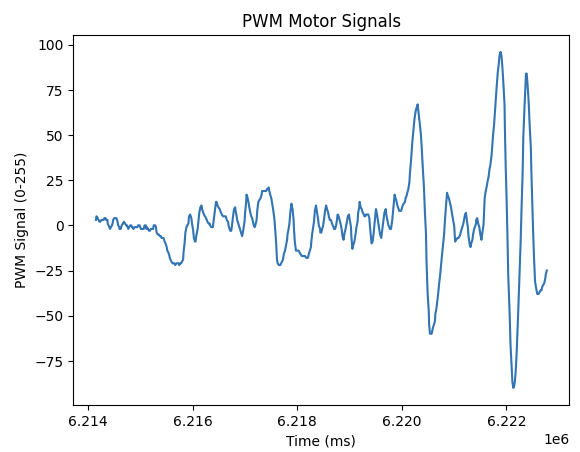
The results were basically the same, but sometimes, it would perform decently well like the run below during Robotics Day.
I felt like PID tuning could only get me so far, so I tried other ways to improve it. I saw others use weights at the top of their robots to help stabilize the pendulum, so I mounted the two batteries for the motor drivers and the Artemis up top as seen below:

While at Robotics Day, I watched Aidan Chan's robot do its inverted pendulum stunt and it was quite impressive so I asked him how he did it. He said he used DMP data for the integral and proportional, but he used the gyro for the derivative since the gyro sends data faster than the DMP does. I calculated the average latency between readings for the DMP and it was around 17.4 ms. I then calculated the average latency between readings from the gyro and it was 18.6 ms. This meant that they basically performed about the same, so I just stuck with using the DMP data.
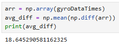
My next approach was to try to reduce the latency between motor inputs since I noticed that my motor inputs had around the same latency as my DMP readings even though my code should use an estimated pitch when DMP data isn't available and that the loop should be a lot faster. I went through my code and saw the code below:
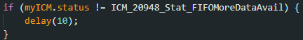
This block of code was in the PID loop and I realized it was holding up the loop since if the FIFO queue that stored the DMP readings didn't have any more data available, it would delay the loop by 10 ms. This meant that the robot was basically waiting until the DMP had a reading before the robot would respond, bypassing the estimated pitch system I made that estimates the pitch based off the last two stored pitch values and the time between them to estimate the current one when there is no up to date DMP reading available. The system is shown below.

I also realized that the way I was clamping the minimum command from above was kinda bad since any value below the minimum command would be set to the minimum command, leaving no fidelity for those smaller commands. I changed it so that it would just add the minimum command instead with the code below.
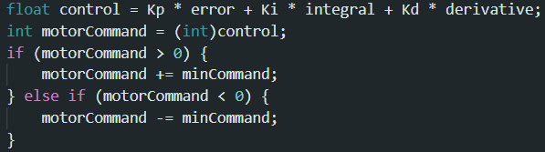
I then tested the robot with these improvements and got very promising results.
Note that the robot dropped at the end because the timer for when to stop the inverted pendulum ended.
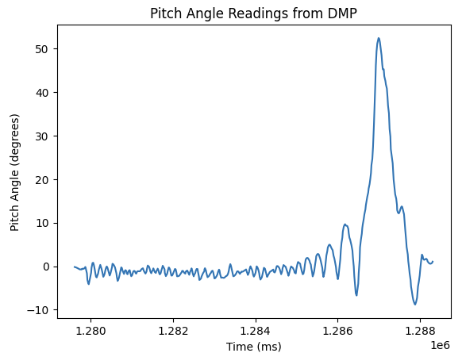
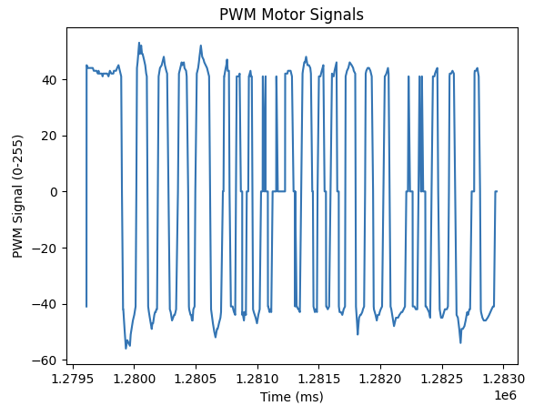
Looking at the video, the robot was able to stand up on its own for around 8 seconds from 0:11 to the end of the video. The only real problem it had while standing up was leaning forward too much at the beginning, but that just required me to nudge it back a little. I reasoned that this could be because the set angle to hold was 0 degrees, but the center of gravity and the IMU's mounting angle could offset the balance point, leading it to favor going forward. I set the angle to hold at -1 degrees to try and fix this and the results are below.
The robot now started favoring going backwards, so I had to tune the perfect angle to hold. I thought about spending a lot of time tuning it, but I knew every time I reran the robot, the perfect angle would be slightly different because of how the IMU and batteries were mounted. Any shift in the batteries and the center of gravity would be different, and the IMU was just mounted with double sided tape, so my robot basically would never be able to hold a zero.
With those considerations in mind, I thought about using a deadzone where if the IMU sensed it was close enough to the set angle to hold like +-1 degree from 0 degrees, the robot would stop its motor inputs. The results can be seen below.
As you can see, the robot doesn't have that twitch when it is close to perpendicular. Even though the PID is still running between pitch readings from -1 to +1 degrees, there is an overide in place that sends zero for the PWM input to the motor drivers as seen in the code below.
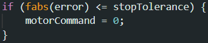
The results from the stop tolerance test was a little lackluster so I tried active braking when the robot was close enough to the set angle to hold.
Again, no visible improvement in performance, so I tuned the stop tolerance, set angle to hold, and I removed the low pass filter to see if it helped.
References